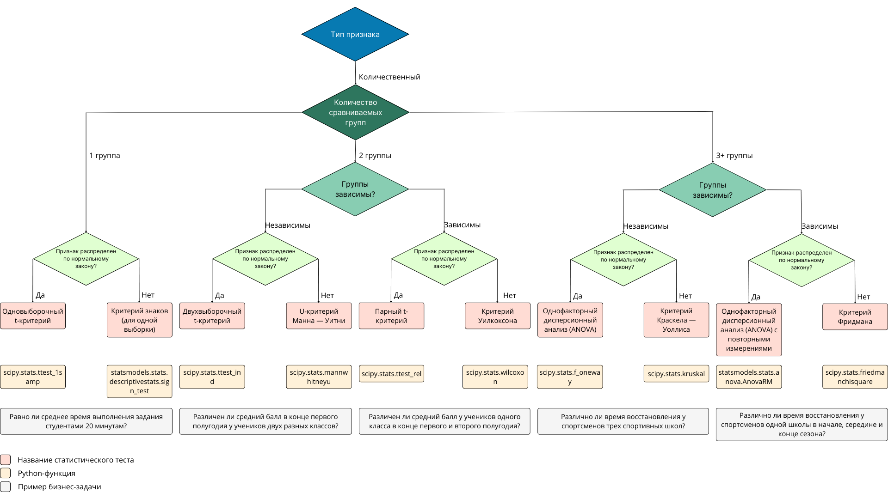

В предыдущем юните мы рассмотрели параметрические методы для нормально распределённых данных, а в этом поговорим о непараметрических. Такие тесты используются, когда данные не распределены нормально или об их распределении ничего не известно.
Особенность непараметрических методов в том, что они сравнивают не сами значения признаков, а их ранги или частоты.
В параметрических методах нулевые гипотезы содержали утверждения о равенстве средних значений признаков в группах. В непараметрических тестах нулевые гипотезы будут о равенстве распределений признаков (что включает в себя равенство средних) или о равенстве медиан признаков (в нормальных распределениях медианы и средние равны).
Детали расчётов можно посмотреть в следующих источниках:
Все функции, которые реализуют непараметрические тесты в Python-библиотеках:
- берут на вход:
- выборки или их параметры;
- параметры проверяемой гипотезы;
- отдают на выход:
- уровень значимости p (p-value);
- дополнительные параметры.
В примерах этого юнита мы не проверяем данные на нормальность. Однако чтобы выбрать тест в реальных задачах, необходимо сделать такую проверку. Если данные распределены нормально, лучше выбрать параметрические тесты.
КРИТЕРИЙ ЗНАКОВ (ДЛЯ ОДНОЙ ГРУППЫ)
Критерий знаков (для одной группы) используют, чтобы сравнить значения медианы признака с заданным значением. Это непараметрический аналог одновыборочного t-критерия.
Критерий знаков (для одной группы) реализован в функции sign_test модуля stats библиотеки statsmodels.
Основные входные параметры:
- samp — выборочные данные;
- mu0 — ожидаемое значение медианы признака.
Пример задачи, когда может понадобиться использование теста:
- Требуется проверить, соответствует ли время ответа оператора времени, заявленному в программе лояльности (время ответа, как правило, не подчиняется нормальному закону).
ПРИМЕР ИСПОЛЬЗОВАНИЯ НА PYTHON
Бизнес-задача
Чтобы отвечать на наиболее часто встречающиеся вопросы о заказах, онлайн-магазин добавил на сайт чат-бота. Планировалось, что это приведёт к изменению времени, за которое покупатель получает ответ на вопрос (раньше оно составляло 60 секунд). Бизнес-заказчик просит узнать, действительно ли время получения ответа больше не составляет 60 секунд.
Чтобы это проверить, замерили время ответа чат-бота для 30 случайно выбранных вопросов. В результате получили следующие данные (в секундах):
55, 53, 60, 49, 45, 57, 46, 53, 59, 53, 53, 55, 42, 41, 59, 43, 47, 60, 50, 57, 59, 56, 52, 48, 59, 53, 59, 50, 59, 59
Уровень значимости необходимо взять равным 0.05.
Решение
Сформулируем гипотезы в математическом виде:
-
Нулевая гипотеза: значение медианы получения ответа с помощью чат-бота () равно 60 секунд.
-
Альтернативная гипотеза: значение медианы получения ответа с помощью чат-бота () не равно 60 секунд.
Решение на Python:
from statsmodels.stats.descriptivestats import sign_test # задаём уровень значимости alpha = 0.05 # загружаем данные data = [55, 53, 60, 49, 45, 57, 46, 53, 59, 53, 53, 55, 42, 41, 59, 43, 47, 60, 50, 57, 59, 56, 52, 48, 59, 53, 59, 50, 59, 59] # проводим тест _, p = sign_test(data, 60) print('p-value = {:.3f}'.format(p)) # интерпретируем результат if p <= alpha: print('p-значение меньше, чем заданный уровень значимости {:.2f}. Отвергаем нулевую гипотезу.'.format(alpha)) else: print('p-значение больше, чем заданный уровень значимости {:.2f}. У нас нет оснований отвергнуть нулевую гипотезу.'.format(alpha)) # p-value = 0.000 # p-значение меньше, чем заданный уровень значимости 0.05. Отвергаем нулевую гипотезу.
Вывод: время получения ответа изменилось и больше не составляет 60 секунд.
U-КРИТЕРИЙ МАННА — УИТНИ
U-критерий Манна — Уитни используют, чтобы оценить различия распределений признака в двух независимых группах. Это непараметрический аналог двухвыборочного t-критерия.
U-критерий Манна — Уитни реализован в функции mannwhitneyu модуля stats библиотеки scipy.
Основные входные параметры:
- x, y — выборочные данные двух групп;
- alternative — вид альтернативной гипотезы:
- ‘two-sided’ (двусторонняя, используется по умолчанию);
- ‘less’ (левосторонняя);
- ‘greater’ (правосторонняя).
Метод основан на следующей процедуре:
- Две выборки объединяют и упорядочивают в порядке возрастания признака.
- Определяют, равномерно ли распределены объекты каждой группы в упорядоченном списке.
- Если объекты одной из групп сконцентрированы в одной из частей списка, то распределения признаков неодинаковы.
Примеры задач, когда может понадобиться использование теста:
- Требуется сравнить распределение зарплат выпускников университета А с зарплатой пяти выпускников университета Б (распределение зарплаты, как правило, не является нормальным).
- Необходимо узнать, различаются ли распределения потери веса для двух групп: для людей, использующих диету А, и для людей, использующих диету Б (потеря веса, как правило, не распределяется нормально).
ПРИМЕР ИСПОЛЬЗОВАНИЯ НА PYTHON
Бизнес-задача
Чтобы отвечать на наиболее часто встречающиеся вопросы о заказах, онлайн-магазин добавил на сайт чат-бота. До этого покупатели могли получить ответ на вопрос через звонок оператору. Бизнес-заказчик просит проверить, изменилось ли время получения ответа после внедрения чат-бота.
Чтобы это выяснить, замерили время ответа с помощью чат-бота для 30 случайно выбранных вопросов, а также время ответа через звонок оператору для ещё 30 случайно выбранных вопросов . В результате получили следующие данные (в секундах):
- Чат-бот: 55, 53, 60, 49, 45, 57, 46, 53, 59, 53, 53, 55, 42, 41, 59, 43, 47, 60, 50, 57, 59, 56, 52, 48, 59, 53, 59, 50, 59, 59.
- Звонок оператору: 72, 80, 66, 72, 75, 71, 73, 71, 75, 68, 63, 68, 62, 65, 77, 66, 67, 62, 60, 74, 61, 67, 61, 63, 62, 79, 61, 63, 62, 63.
Уровень значимости необходимо взять равным 0.05.
Решение
Сформулируем гипотезы:
- Нулевая гипотеза: распределения времени получения ответа через чат-бота и через звонок оператору одинаковы.
- Альтернативная гипотеза: распределения времени получения ответа через чат-бота и через звонок оператору неодинаковы.
Решение на Python:
import scipy.stats as stats # задаём уровень значимости alpha = 0.05 # загружаем данные data_chat_bot = [55, 53, 60, 49, 45, 57, 46, 53, 59, 53, 53, 55, 42, 41, 59, 43, 47, 60, 50, 57, 59, 56, 52, 48, 59, 53, 59, 50, 59, 59] data_operator = [72, 80, 66, 72, 75, 71, 73, 71, 75, 68, 63, 68, 62, 65, 77, 66, 67, 62, 60, 74, 61, 67, 61, 63, 62, 79, 61, 63, 62, 63] # проводим тест _, p = stats.mannwhitneyu(data_chat_bot, data_operator) print('p-value = {:.3f}'.format(p)) # интерпретируем результат if p <= alpha: print('p-значение меньше, чем заданный уровень значимости {:.2f}. Отвергаем нулевую гипотезу.'.format(alpha)) else: print('p-значение больше, чем заданный уровень значимости {:.2f}. У нас нет оснований отвергнуть нулевую гипотезу.'.format(alpha)) # p-value = 0.000 # p-значение меньше, чем заданный уровень значимости 0.05. Отвергаем нулевую гипотезу.
Вывод: время получения ответа изменилось после внедрения чат-бота.
КРИТЕРИЙ УИЛКОКСОНА
Критерий Уилкоксона используют, чтобы оценить различия распределений признака в двух зависимых группах. Это непараметрический аналог парного t-критерия.
Критерий Уилкоксона реализован в функции wilcoxon модуля stats библиотеки scipy.
Основные входные параметры:
- x, y — выборочные данные двух групп;
- alternative — вид альтернативной гипотезы:
- ‘two-sided’ (двусторонняя, используется по умолчанию);
- ‘less’ (левосторонняя);
- ‘greater’ (правосторонняя).
Этот тест аналогичен критерию знаков (для одной группы).
Примеры задач, когда может понадобиться использование теста:
- Необходимо сравнить два метода обучения, сравнив успеваемость студентов до и после использования каждого из методов (успеваемость не распределена нормально).
- Требуется оценить различия в затратах на производство продукта до и после обновления технологий (затраты не подчиняются нормальному закону).
ПРИМЕР ИСПОЛЬЗОВАНИЯ НА PYTHON
Бизнес-задача
Чтобы отвечать на наиболее часто встречающиеся вопросы о заказах, онлайн-магазин добавил на сайт чат-бота. До этого покупатели могли получить ответ на вопрос через звонок оператору. Планировалось, что нововведение приведёт к уменьшению времени получения ответа. Бизнес-заказчик просит узнать, действительно ли получить ответ с помощью чат-бота быстрее, чем через звонок оператору. Эксперты в предметной области говорят, что время ответа сильно зависит от вопроса покупателя, поэтому замер необходимо делать на одних и тех же вопросах.
Чтобы решить задачу, для 30 случайно выбранных вопросов сначала замерили время ответа с помощью чат-бота, а затем — время ответа через звонок оператору. В результате получили следующие данные (в секундах):
- Чат-бот: 71, 97, 71, 97, 83, 90, 83, 94, 88, 76, 79, 99, 82, 85, 93, 78, 76, 87, 73, 72, 89, 89, 71, 86, 78, 93, 86, 95, 83, 73.
- Звонок оператору: 114, 112, 115, 124, 101, 108, 104, 109, 103, 115, 100, 129, 120, 129, 117, 125, 112, 105, 128, 107, 120, 108, 129, 100, 116, 105, 128, 128, 120, 106.
Уровень значимости необходимо взять равным 0.05.
Решение
Сформулируем гипотезы в математическом виде:
- Нулевая гипотеза: распределения времени получения ответа через чат-бота и через звонок оператору одинаковы.
- Альтернативная гипотеза: распределения времени получения ответа через чат-бота и через звонок оператору неодинаковы.
Решение на Python:
import scipy.stats as stats # задаём уровень значимости alpha = 0.05 # загружаем данные data_chat_bot = [71, 97, 71, 97, 83, 90, 83, 94, 88, 76, 79, 99, 82, 85, 93, 78, 76, 87, 73, 72, 89, 89, 71, 86, 78, 93, 86, 95, 83, 73] data_operator = [114, 112, 115, 124, 101, 108, 104, 109, 103, 115, 100, 129, 120, 129, 117, 125, 112, 105, 128, 107, 120, 108, 129, 100, 116, 105, 128, 128, 120, 106] # проводим тест _, p = stats.wilcoxon(data_chat_bot, data_operator, alternative = 'less') print('p-value = {:.3f}'.format(p)) # интерпретируем результат if p <= alpha: print('p-значение меньше, чем заданный уровень значимости {:.2f}. Отвергаем нулевую гипотезу.'.format(alpha)) else: print('p-значение больше, чем заданный уровень значимости {:.2f}. У нас нет оснований отвергнуть нулевую гипотезу.'.format(alpha)) # p-value = 0.000 # p-значение меньше, чем заданный уровень значимости 0.05. Отвергаем нулевую гипотезу.
Вывод: время получения ответа через чат-бота меньше, чем через звонок оператору.
КРИТЕРИЙ КРАСКЕЛА — УОЛЛИСА
Критерий Краскела — Уоллиса (однофакторный дисперсионный анализ на рангах) является обобщением U-критерия Манна — Уитни на случай нескольких групп. Его используют, чтобы оценить различия медиан признака в двух и более независимых группах. Это непараметрический аналог ANOVA.
Критерий Краскела — Уоллиса реализован в функции kruskal модуля stats библиотеки scipy.
Основные входные параметры:
- sample1, sample2, … — выборочные данные групп.
Примеры задач, когда может понадобиться использование теста:
- Необходимо сравнить распределения стоимости заказов в нескольких городах. Чтобы избежать влияния выбросов, вместо сравнения средних значений используют ранги.
- Требуется сравнить распределения стоимости жилья в разных районах города. Чтобы учесть различия в распределении стоимости, вместо сравнения средних значений используют ранги.
ПРИМЕР ИСПОЛЬЗОВАНИЯ НА PYTHON
Бизнес-задача
У онлайн-магазина существует три группы лояльности для покупателей: базовый, серебряный и золотой. Вопросы покупателей, на которые не может ответить чат-бот, направляются оператору. Чтобы вопросы от покупателей более высокого уровня лояльности обрабатывались быстрее, разработали систему ранжирования вопросов. Бизнес-заказчик просит проверить, действительно ли есть разница во времени обработки вопроса для покупателей разных уровней лояльности.
Чтобы это выяснить, случайным образом выбрали по 30 вопросов для каждого уровня и замерили для них время ответа с помощью чат-бота. В результате получили следующие данные (в секундах):
- Базовый: 106, 96, 105, 119, 91, 118, 108, 98, 103, 102, 98, 97, 104, 100, 94, 94, 98, 103, 95, 93, 118, 91, 96, 115, 119, 111, 102, 118, 91, 98.
- Серебряный: 96, 95, 102, 103, 96, 120, 97, 112, 108, 90, 99, 93, 91, 91, 119, 95, 110, 108, 117, 99, 100, 99, 119, 98, 101, 95, 118, 110, 114, 116.
- Золотой: 99, 106, 92, 97, 98, 95, 119, 120, 116, 93, 102, 109, 98, 99, 100, 113, 91, 96, 119, 96, 95, 112, 111, 110, 102, 112, 105, 93, 111, 111.
Уровень значимости необходимо взять равным 0.05.
Решение
Сформулируем гипотезы в математическом виде:
-
Нулевая гипотеза: медианы времени обработки вопросов от покупателей уровней базовый (), серебряный () и золотой () равны.
- Альтернативная гипотеза: медианы времени обработки вопросов от покупателей уровней базовый (), серебряный () и золотой () не равны.
Решение на Python:
import scipy.stats as stats # задаём уровень значимости alpha = 0.05 # загружаем данные data_basic = [106, 96, 105, 119, 91, 118, 108, 98, 103, 102, 98, 97, 104, 100, 94, 94, 98, 103, 95, 93, 118, 91, 96, 115, 119, 111, 102, 118, 91, 98 ] data_silver = [96, 95, 102, 103, 96, 120, 97, 112, 108, 90, 99, 93, 91, 91, 119, 95, 110, 108, 117, 99, 100, 99, 119, 98, 101, 95, 118, 110, 114, 116] data_gold = [99, 106, 92, 97, 98, 95, 119, 120, 116, 93, 102, 109, 98, 99, 100, 113, 91, 96, 119, 96, 95, 112, 111, 110, 102, 112, 105, 93, 111, 111] # проводим тест _, p = stats.kruskal(data_basic, data_silver, data_gold) print('p-value = {:.3f}'.format(p)) # интерпретируем результат if p <= alpha: print('p-значение меньше, чем заданный уровень значимости {:.2f}. Отвергаем нулевую гипотезу.'.format(alpha)) else: print('p-значение больше, чем заданный уровень значимости {:.2f}. У нас нет оснований отвергнуть нулевую гипотезу.'.format(alpha)) # p-value = 0.837 # p-значение больше, чем заданный уровень значимости 0.05. У нас нет оснований отвергнуть нулевую гипотезу.
Вывод: у нас нет оснований утверждать, что есть разница во времени обработки вопросов от покупателей разных уровней лояльности.
КРИТЕРИЙ ФРИДМАНА
Критерий Фридмана используют, чтобы оценить различия распределений признака в двух и более зависимых группах. Это непараметрический аналог парного ANOVA с повторными измерениями.
Критерий Фридмана реализован в функции friedmanchisquare модуля stats библиотеки scipy.
Основные входные параметры:
- sample1, sample2, … — выборочные данные групп.
ПРИМЕР ИСПОЛЬЗОВАНИЯ НА PYTHON
Бизнес-задача
У онлайн-магазина существует три уровня программы лояльности: «Базовый», «Серебряный» и «Золотой». Вопросы покупателей, на которые не может ответить чат-бот, направляются оператору. Чтобы вопросы от покупателей более высокого уровня лояльности обрабатывались быстрее, разработали систему ранжирования вопросов. Бизнес-заказчик просит проверить, действительно ли есть разница во времени обработки вопроса для покупателей разных уровней лояльности. Эксперты в предметной области говорят, что время ответа сильно зависит от вопроса покупателя, поэтому замер стоит делать на одних и тех же вопросах.
Чтобы решить задачу, случайным образом выбрали 30 вопросов и замерили на них время ответа с помощью чат-бота для трёх уровней лояльности. В результате получили следующие данные (в секундах):
- «Базовый»: 113, 115, 108, 104, 107, 96, 114, 103, 103, 120, 92, 103, 120, 100, 110, 106, 112, 99, 118, 113, 102, 94, 92, 109, 91, 113, 95, 107, 110, 103.
- «Серебряный»: 89, 80, 95, 77, 82, 98, 84, 83, 73, 93, 89, 78, 90, 73, 83, 73, 84, 90, 75, 75, 86, 88, 72, 72, 96, 75, 87, 99, 80, 82.
- «Золотой»: 62, 84, 67, 71, 64, 89, 65, 70, 86, 77, 84, 81, 89, 68, 87, 70, 70, 61, 82, 79, 60, 62, 88, 61, 76, 87, 79, 90, 77, 65.
Уровень значимости необходимо взять равным 0.05.
Решение
Сформулируем гипотезы:
- Нулевая гипотеза: распределения времени обработки вопросов от покупателей уровней «Базовый», «Серебряный» и «Золотой» одинаковы.
- Альтернативная гипотеза: распределения времени обработки вопросов от покупателей уровней «Базовый», «Серебряный» и «Золотой» неодинаковы.
Решение на Python:
import scipy.stats as stats # задаём уровень значимости alpha = 0.05 # загружаем данные data_basic = [113, 115, 108, 104, 107, 96, 114, 103, 103, 120, 92, 103, 120, 100, 110, 106, 112, 99, 118, 113, 102, 94, 92, 109, 91, 113, 95, 107, 110, 103] data_silver = [89, 80, 95, 77, 82, 98, 84, 83, 73, 93, 89, 78, 90, 73, 83, 73, 84, 90, 75, 75, 86, 88, 72, 72, 96, 75, 87, 99, 80, 82] data_gold = [62, 84, 67, 71, 64, 89, 65, 70, 86, 77, 84, 81, 89, 68, 87, 70, 70, 61, 82, 79, 60, 62, 88, 61, 76, 87, 79, 90, 77, 65] # проводим тест _, p = stats.friedmanchisquare(data_basic, data_silver, data_gold) print('p-value = {:.3f}'.format(p)) # интерпретируем результат if p <= alpha: print('p-значение меньше, чем заданный уровень значимости {:.2f}. Отвергаем нулевую гипотезу.'.format(alpha)) else: print('p-значение больше, чем заданный уровень значимости {:.2f}. У нас нет оснований отвергнуть нулевую гипотезу.'.format(alpha)) # p-value = 0.000 # p-значение меньше, чем заданный уровень значимости 0.05. Отвергаем нулевую гипотезу.
Вывод: время обработки вопросов для покупателей разных уровней лояльности различно.
Добавим все рассмотренные функции в алгоритм выбора теста (сохраните схему на свой компьютер, чтобы рассмотреть её детально):

В этом юните мы рассмотрели наиболее популярные непараметрические тесты. Для каждого из них мы привели пример использования на Python.
Изучив параметрические и непараметрические тесты, мы научились выполнять шаг 5 алгоритма проверки статистических гипотез — проводить статистические тесты и вычислять p-value.
В следующем юните мы узнаем, какие статистические тесты используют для оценки категориальных признаков.
Задание 8.2
Как называется функция, с помощью которой в Python реализован непараметрический аналог для парного t-критерия?